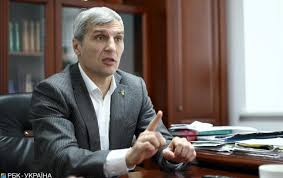

Кандидат у Президенти України Русла́н Кошули́нський

підтримка : 1.62%
Русла́н Володи́мирович Кошули́нський (9 вересня 1969 р., місто Львів) — український політик.
Народний депутат України VII скликання, заступник голови Верховної Ради (VII скликання).
Заступник голови партії, голова Секретаріату Всеукраїнського об'єднання «Свобода».
Єдиний кандидат від об'єднаних націоналістичних сил у Президенти України на виборах 2019 року